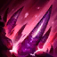

起手裝備
 紅水晶
紅水晶
雄心後改日炎補清線，接荊棘、無盡絕望及雅瑪蘭；沒有位移，承傷與卡位比死者追人優先。


五件成裝與鞋子分開列示；起手與核心是購買路線，不是額外佔用的成裝欄位。鞋子完成時機仍依對線壓力與回城金錢調整。


不死、爆破、過度生長保留，削弱後仍以饗宴與補兵穩定成長；不靠不死層數宣稱必然壓線。


科加斯：閃現留作躲關鍵控制／開戰，傳送支援回線與物件；施放前先確認兵線與落點安全。
加點優先：E > W > Q
保留E > W > Q；優先提升恐懼尖刺。15級分配已核對，每個基本技能四點，大絕於5、9、13級升級。
擊殺敵軍時回復生命與魔力。基礎回復為18生命（16＋2×等級）與4.35魔力（4＋0.35×等級）；若目標為英雄、防禦塔或史詩級野怪，回復量加倍。

以下為技能1級基準，成長依技能等級變化。冷卻6秒。使指定區域破裂，擊飛敵軍1秒並造成80＋100%魔攻的魔法傷害，之後緩速60%，持續1.5秒。主要遠距控制、追擊與反開技能。
以下為技能1級基準，成長依技能等級變化。冷卻12秒。對前方範圍敵軍造成80＋70%魔攻的魔法傷害並沉默1.4秒。可先沉默再接破裂，提高控制鏈命中率。
以下為技能1級基準，成長依技能等級變化。冷卻7秒。強化接下來3次普攻，造成20＋30%魔攻的魔法傷害，另加（2.3%＋0.6%×饗宴層數）目標最大生命的魔法傷害，並施加30%衰減緩速1.5秒。體型越大尖刺越寬；對士兵與野怪的基礎傷害上限為100＋30%魔攻。
基礎冷卻70/60/50秒（依大絕等級；尚未計入技能加速）。對英雄的額外生命傷害係數為10%，不是舊版8%；此項已由官方7.2c公告確認。技能1級時，對英雄造成300＋50%魔攻＋10%額外生命真實傷害；對士兵與野怪造成1200＋50%魔攻＋10%額外生命真實傷害。擊殺取得饗宴層數，士兵與非史詩野怪最多提供6層。原表每層80最大生命為技能1級基準，並非全部等級固定80。 技能1級每層另增加6%體型、4.7攻擊距離與2.5饗宴施放距離；距離與體型有各自上限，依當局面板判斷。
官方7.2c將饗宴基礎冷卻80/70/60秒調為70/60/50秒，額外生命係數8%調為10%；本站7.3b沿用此已確認數值。外站仍列8%的段落未採用。
斬殺前看當局技能面板與目標狀態；不要將技能1級的300基礎傷害、每層80生命當作整場固定值。
官方7.2c已確認額外生命傷害係數10%、基礎冷卻70/60/50秒；8%為調整前值，不再保留此項待確認。既有300基礎傷害及每層80生命明確限定技能1級，未推測完整成長表。 Q／W／E的既有單一傷害、冷卻與控制數字均明確標為技能1級基準，與手機版專用技能表的首級值相符；不再把巴龍路的單級數字讀成各級固定值。R的10%額外生命係數與各級冷卻另外由官方7.2c覆核。
3技強化 → 普攻 → 1技擊飛 → 2技沉默 → 普攻 → 普攻
先用E第一下普攻逼走位，再用Q抓移動方向；Q命中後接W沉默，讓剩餘兩次尖刺更容易打滿。
1技擊飛 → 2技沉默 → 3技 → 普攻 → 普攻 → 4技饗宴
Q命中後立刻接W，先封住閃現與技能反打，再用E補傷害；進入饗宴斬殺線就直接收掉，不必貪第三下普攻。
1技控場 → 2技沉默 → 石像鬼磐核 → 3技 → 4技收頭
先用Q/W把敵方前後排切開，僅在情境配置已購買石像鬼磐核時，才於承受集火時啟用；預設出裝沒有此主動裝。R優先處理能確定斬殺的核心，將團戰快速變成人數優勢。
1等先學E，用三次強化普攻處理兵線與短換血。Q不要隨便空放，保留來接敵方位移落點或反打；被動擊殺單位能回血回魔，對線可用補兵維持續航。第一件預設雄心之鋼；如果對線壓力太大、很難安全疊層，可先做日炎聖盾再回頭補雄心之鋼。
雄心之鋼 → 日炎聖盾 → 荊棘之甲為主要成裝順序。雄心後改日炎補清線，接荊棘、無盡絕望及雅瑪蘭；沒有位移，承傷與卡位比死者追人優先。
科加斯沒有位移，團戰以卡位置、反開與壓縮走位為主。Q 擊飛＋W 沉默後站住前排，再尋找 R 真傷斬殺。鞋子依敵方傷害與控制調整：物理普攻壓力高選鍍板鋼蓋→裝甲戰靴；魔法與控制壓力高選水星之靴→鎖鏈軍靴。
犽凝、關與蒙多能用持續傷害或抗控處理成長坦克；沉默保留給對手進場或撤退技能。
對局名單是機制與分路判斷，不代表固定勝率；需同時看雙方熟練度、兵線與陣容。
犽凝、關與蒙多能用持續傷害或抗控處理成長坦克；沉默保留給對手進場或撤退技能。
雄心後改日炎補清線，接荊棘、無盡絕望及雅瑪蘭；沒有位移，承傷與卡位比死者追人優先。
威脅名單參考同分路指南；較有利名單仍是機制推論，需連同兵線、打野與玩家熟練度判斷，並非台服勝率排名。
科加斯饗宴對英雄的額外生命係數：外站技能欄8%，本站既有截圖文字10%；本輪不以外站單一數值覆蓋，待官方／當前遊戲核定。
以下情境替換以本頁7.3b五件成裝為基準。同一格多項建議擇一；鞋子由二級升三級，主動裝另占成裝格。
高
觸發：敵方前排物防／魔防成形，或近身普攻威脅明顯。
雅瑪蘭守護像 → 冰霜之心
面對坦克／普攻威脅時，將雅瑪蘭守護像換成冰霜之心；先保留前三件核心，若替換核心位須確認目前死亡或輸出不足的原因。
面對坦克／普攻威脅時，將雅瑪蘭守護像換成冰霜之心；先保留前三件核心，若替換核心位須確認目前死亡或輸出不足的原因。
高
觸發：主要死亡原因是一輪集火，無法完成輸出或控制。
雅瑪蘭守護像 → 蘭頓之兆
面對爆發／暴擊多時，將雅瑪蘭守護像換成蘭頓之兆；先保留前三件核心，若替換核心位須確認目前死亡或輸出不足的原因。
面對爆發／暴擊多時，將雅瑪蘭守護像換成蘭頓之兆；先保留前三件核心，若替換核心位須確認目前死亡或輸出不足的原因。
高
觸發：敵方法術先手或持續魔法傷害成為主要威脅。
雅瑪蘭守護像 → 自然之力
面對魔法傷害多時，將雅瑪蘭守護像換成自然之力；先保留前三件核心，若替換核心位須確認目前死亡或輸出不足的原因。
面對魔法傷害多時，將雅瑪蘭守護像換成自然之力；先保留前三件核心，若替換核心位須確認目前死亡或輸出不足的原因。
高
觸發：魔法傷害與控制鏈影響生存或輸出。
鍍板鋼蓋 → 水星之靴
魔法傷害及可縮短的控制占主導時，整條改水星之靴→鎖鏈軍靴；韌性不能縮短擊飛。
魔法傷害及可縮短的控制占主導時，整條改水星之靴→鎖鏈軍靴；韌性不能縮短擊飛。
韌性不能縮短所有控制，例如擊飛；護盾與解控各有適用條件。
高
觸發：敵人持續回復令集火失敗。
目前配置已提供部分治療／吸血多所需功能；先按威脅調整購買順序，不為分類名稱強行多買一件。
本頁校正版本：7.3b；校正日期：2026-10-15。
參考來源標示版本：7.3b
Tier、出裝、符文與對局是本站編輯建議，不是官方推薦或已驗證台服勝率。v118延續同日v117的逐路複核，針對來源缺口及數值衝突再核對；未宣稱所有技能已在手機內逐級實測。
評級理由：維持S；同分路公開指南參考為S。犽凝、關與蒙多能用持續傷害或抗控處理成長坦克；沉默保留給對手進場或撤退技能。
WildRiftFire 參考攻略 ↗ · WildRiftFire 參考攻略 ↗ · Riot 官方資料 ↗ · Riot 官方資料 ↗
本頁延續2026/10/15 v117的巴龍路逐項複核，當前採用7.3b來源；來源只用作配置與機制參考，不等同官方推薦或台服即時勝率。
WildRiftFire 參考攻略 ↗ · WildRiftFire 參考攻略 ↗ · Riot 官方資料 ↗ · Riot 官方資料 ↗
官方7.2c已確認額外生命傷害係數10%、基礎冷卻70/60/50秒；8%為調整前值，不再保留此項待確認。既有300基礎傷害及每層80生命明確限定技能1級，未推測完整成長表。
Q／W／E的既有單一傷害、冷卻與控制數字均明確標為技能1級基準，與手機版專用技能表的首級值相符；不再把巴龍路的單級數字讀成各級固定值。R的10%額外生命係數與各級冷卻另外由官方7.2c覆核。
維持S；同分路公開指南參考為S。犽凝、關與蒙多能用持續傷害或抗控處理成長坦克；沉默保留給對手進場或撤退技能。
WildRiftFire 參考攻略 ↗ · WildRiftFire 參考攻略 ↗ · Riot 官方資料 ↗ · Riot 官方資料 ↗
外站對英雄係數8%與本站10%不一致，v117列為待核。
官方7.2c明確列示額外生命傷害係數8%→10%，冷卻80/70/60秒→70/60/50秒；保留10%，並補上各級基礎冷卻，巴龍與打野同步。